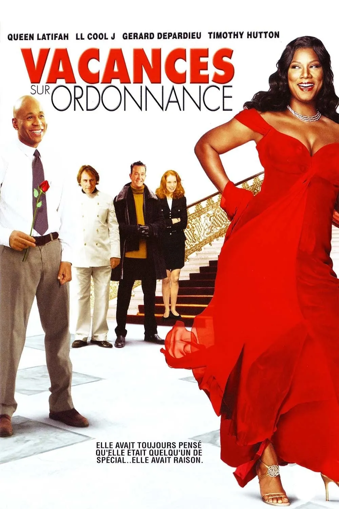
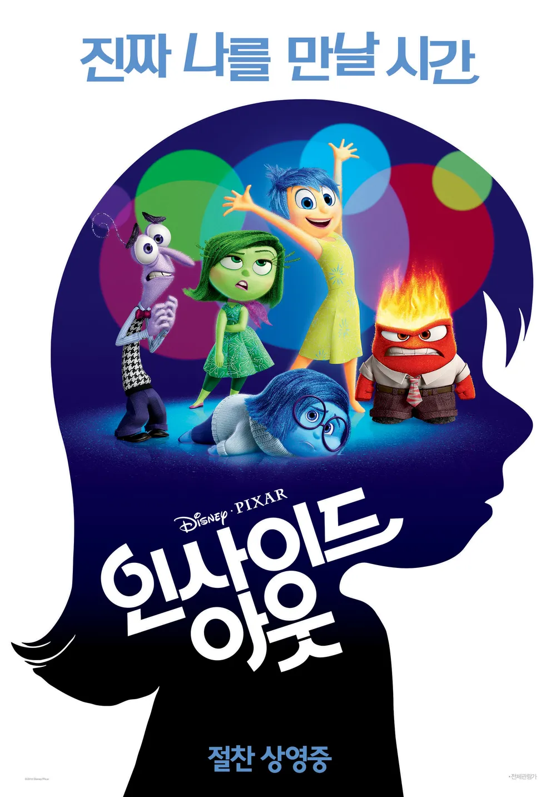
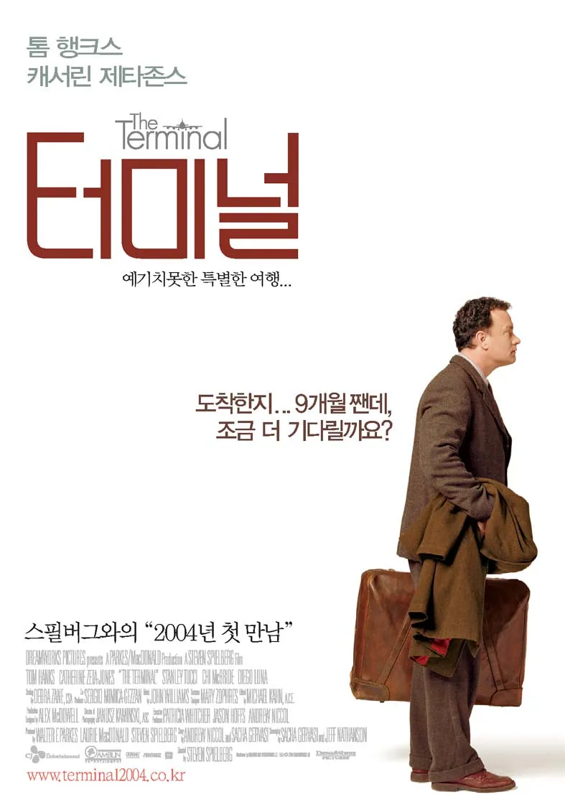

자기소개
리안(Rian)
강남역 주변 어딘가🏠
- 안녕하세요! 저는 리안이라고 합니다!!
- 전시회를 가는 것과 한강에서 자전거 타는 것을 좋아합니다!
- 잘 부탁합니다~
인생 영화 BEST5
| 순위 | 제목 | 포스터 | 줄거리 | 바로가기 |
|---|---|---|---|---|
| 1 | 어바웃 타임 |

|
평범한 소년 팀은 성인이 되던 날, 아버지로부터 가문의 남자들은 시간을 되돌릴 수 있는 능력을 가지고 태어난다는 말을 듣게 된다. 시간이 흘러, 런던에서 생활하게 된 팀은 우연히 만난 아름다운 여인 메리에게 한눈에 반하게 되지만 잘못된 시간 여행으로 인해 그녀의 연락처를 잃어버리게 되고, 다시 한번 그녀의 마음을 얻기 위해 시간을 조종하는 능력을 이용하기 시작한다. | 바로가기 |
| 2 | 라스트 홀리데이 |  | 수줍음 많은 주방용품 판매원 조지아는 머리를 부딪히는 사고를 당한 뒤 병원에서 시한부 선고를 받는다. 조지아는 그동안 꿈꾸던 것들을 모두 실현해보기로 하고, 유럽의 호화로운 호텔로 떠난다. | 바로가기 |
| 3 | 인사이드 아웃 |  | 하키를 좋아하는 11살 소녀 라일리는 행복한 삶을 살고 있다. 그러나 부모님과 함께 샌프란시스코로 이사하면서 그녀의 삶은 완전히 뒤바뀐다. 기쁨은 이런 큰 변화 속에서 라일리의 감정을 잘 다스리려고 노력한다. 그러나, 이사로 인한 스트레스로 슬픔이 나타나고 만다. 라일리의 기분을 위해 고군분투하던 기쁨과 슬픔은 먼 곳에 떨어져 버리고 결국 라일리의 감정 컨트롤 본부에는 악감정만이 남게 된다. | 바로가기 |
| 4 | 알라딘 | 사막 속에 자리한 아그라바 왕국, 좀도둑질로 생계를 유지하는 알라딘은 우연히 마주친 공주 자스민에게 신분도 모른 채 마음을 빼앗긴다. 한편, 사악한 마법사 자파는 왕국을 손에 넣기 위해 마법의 동굴 속 어떤 램프를 손에 넣으려 하고, 동굴에 접근할 수 있는 맑은 영혼을 가진 알라딘을 이용해 가져오려는 계획을 세운다. 의도치 않게 램프는 알라딘의 차지가 되고, 알라딘은 램프의 요정 지니가 들어주는 소원 덕에 왕자의 모습으로 탈바꿈한다. | 바로가기 | |
| 5 | 터미널 |  | 나보스키는 동유럽의 작은 나라, 크로코지아 사람이다. 어느 날 그는 멋진 꿈을 안고 미국, 뉴욕으로 출발해 JFK 공항에 도착한다. 이제 다음 단계는 공항을 벗어나 미국 땅을 밟는 것인데 아뿔싸 나보스키는 그가 미국으로 이동하는 동안 크르코지아에서 쿠데타가 일어나 본인의 국적으로는 이 공항에서 나갈 수 없다는 어처구니없는 정보를 접하게 된다. 문제가 해결되길 바라면 대기하는 수밖에 방법이 없는 그는 공항에서 어떻게든 생존해야 한다. | 바로가기 |